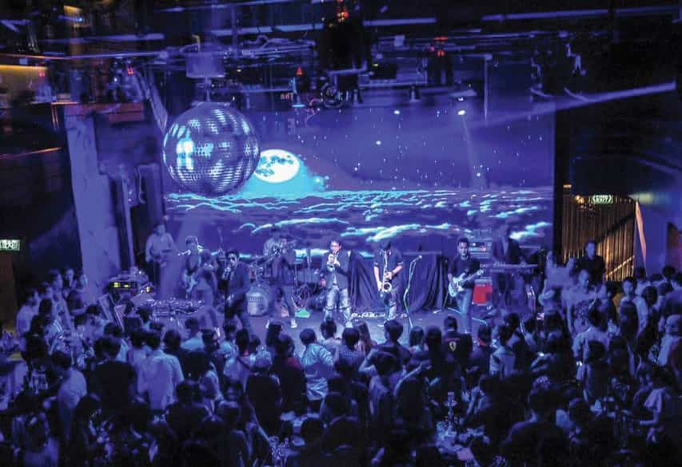
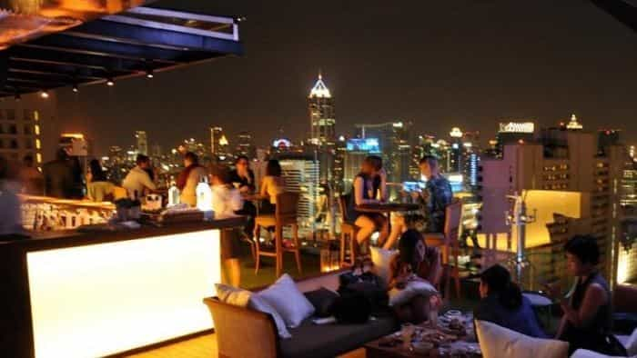
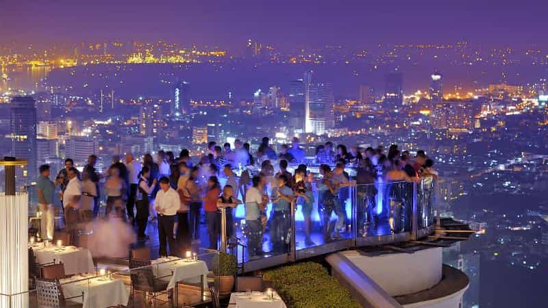

The Bangkok nightlife scene is changing by the year, but the lure it has on guys who want to escape the current madness of Western society’s self-flagellation, if only for a temporary battery recharge, is undiminished. If you’re sick of social justice warriors, bat-shit crazy feminists, and political correctness gone mad, the Thai capital provides a valuable escape.
As someone who has traveled around Southeast Asia extensively, I can assure you that no other city in the region can compete with Bangkok when it comes to the nightlife. It isn’t hard to find Bangkok nightlife guides on the net that cover the city’s vibrant red light districts, but getting the lowdown on regular nightlife areas is not so easily done, so I thought a few words on that might add something worthwhile.
RCA – Nightclub Ground Zero
RCA actually stands for Royal City Avenue, and it is by far and away the most popular area for clubs/discos. RCA has enjoyed this status for many years already, but it’s only recently that foreigners have started heading there. Virtually the entire street is lined with clubs, but the northern end of the street in particular is wall to wall clubs, and in the heart of all the mayhem, you will find Route 66.
Route 66, which is spread out over various zones, could be described as being the epicenter of RCA. It is a huge club which is dedicated to house music, EDM, and some live Thai music thrown in for good measure.
The clubs don’t start getting busy until after 10pm, but later on clubs like Route 66 reach bursting point, with the party spreading out into the street where tables and chairs are set up to cater for the masses. Let’s just say that if you have not been to RCA, then you haven’t experienced the Bangkok nightlife clubbing scene at its best.
Entrance fees for almost all the clubs at RCA range between 300 and 500 Baht for foreigners (one US dollar is roughly 30 Baht). For locals, entry is either free or it is cheaper. Short-time tourists probably wouldn’t even realize there’s a dual pricing system and, even if they did, they generally don’t object. If you look beyond the dual pricing, RCA is definitely an area you do not want to miss if you are hoping to have a great night out.
Khao San Road – One of the Most Popular Streets in Asia
In years past, Khao San Road was nothing like it is today. When backpackers on tight budgets wanted to sample Bangkok nightlife, Khao San Road is where they went. Fifteen years ago, there was only one nightclub in the area and the rest of the road was full of cheap guesthouses, restaurants, bars, and tour operators.
Today, Khao San Road is packed with bars and is home to several nightclubs that tend to attract a large number of well-dressed Thais and foreigners alike. It remains popular with backpackers but there’s a much more mixed patronage these days, and it’s not uncommon to see the odd Thai celebrity out and about. In terms of class, it has certainly moved up the ladder, but it has still managed to retain a lot of its original charm. On the downside, bars, clubs and restaurants are no longer allowed to stay open all night, and prices have gone up.
Despite its radical makeover, Khao San Road does still attract its fair share of undesirables. For this reason, there are now countless CCTVs and a strong but discreet police presence. In the event that somebody approaches you and offers you something which is illegal, don’t allow yourself to be tempted.
Thonglor Soi 10 – A Real Eye Opener
The main Thonglor Road (Sukhumvit Soi 55) is full of up-market cafes, pubs, restaurants and so on. It offers a modern, authentic Bangkok nightlife experience. Thonglor Soi 10 is the place to go, but don’t expect to see many foreigners about. You will probably see a few, but certainly not as many as you will encounter in more tourist-focused areas.

Thonglor Soi 10 is generally where you will find many of Bangkok’s wealthiest young people partying until the early hours of the morning. Expect a well-dressed and well-heeled crowd who are out to spend their swollen allowances. Amongst the most popular places here are Funky Villa and Derno, both of which charge a 500 baht entrance fee which also entitles you to two free drinks. Safe House, which is another very popular club, has acquired a bit of a reputation for closing later than the usual 2am restriction. How they get away with this is anyone’s guess.
Sukhumvit Soi 11 – Something for Everyone
Over the last two decades, Sukhumvit Soi 11 has slowly but surely evolved from what was once quite a seedy area, to the relatively upscale area it is today. The area serves up a really nice blend of excellent rooftop bars, fancy bistros, and vibrant nightclubs. Low prices can be found at the aptly named Cheap Charlie bar, whilst more expensive and classy rooftop venues are also available.

Above Eleven, a rooftop bar located on the 38th floor of Fraser Suits
If you feel like ending your night with some dancing and a lively crowd, the Levels nightclub can definitely be recommended. Entrance at this club is free, and girls can usually win a few free drinks as well. Most places in this area don’t really enforce any sort of dress code, but smart casual dress is recommended. Some venues tend to turn you away if you arrive in a pair of shorts and flip-flops.
The crowd at Sukhumvit Soi 11 is mostly a blend of tourists and expats, although the area does also attract a fair amount of Thais. Interestingly enough, most of the Thais here tend to be females, which is great for single guys hoping for a date. Another nice thing about this area is the fact that it generally caters for both the younger crowd and the older crowd.
I’ve mentioned in previous articles that Bangkok is my recommended venue for finding a Thai girlfriend if an exotic romance or two is something that interests you.
Silom Road – Business by Day, Party by Night
Silom Road is essentially a commercial hub during the day with banks and office blocks seemingly occupying every inch of space but, as the sun begins to dip beyond the horizon, makeshift stalls start appearing all around you. Bars and clubs start opening their doors and Tuk-Tux drivers start offering “magical” Bangkok nightlife tours. The atmosphere here is well and truly addictive, so don’t be surprised if you find yourself being drawn into the surrounding madness.

While everyone has different tastes, most people would agree that the best way enjoy Silom Road is to keep on moving. In other words, don’t anchor yourself in just one bar or club because there is a tremendous amount of variety here that you might easily miss.
Silom Road attracts just as many locals as it does foreigners, and it attracts people of all ages. This electrifying part of the city really does have something for everyone. In fact, unless you are heading out for the sole purpose visiting a futuristic nightclub, one could easily argue that Silom Road is to a great extent the ultimate area for anyone to get a real taste of Bangkok nightlife.
There is so much to see and do in Bangkok, both during the day, and at night, so the next time you are in this enchanting city when the sun goes down, jump into a Tuk-Tuk or a taxi, and get them to drop you off in one of the areas which have been discussed in this short Bangkok nightlife guide. No matter which of these places you chose to visit, you can be sure it will be an experience you will never forget.
Read More: 5 Myths About Thai Girls